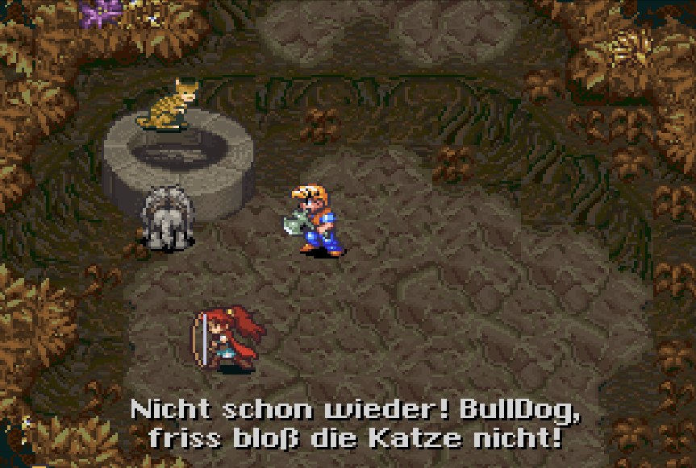
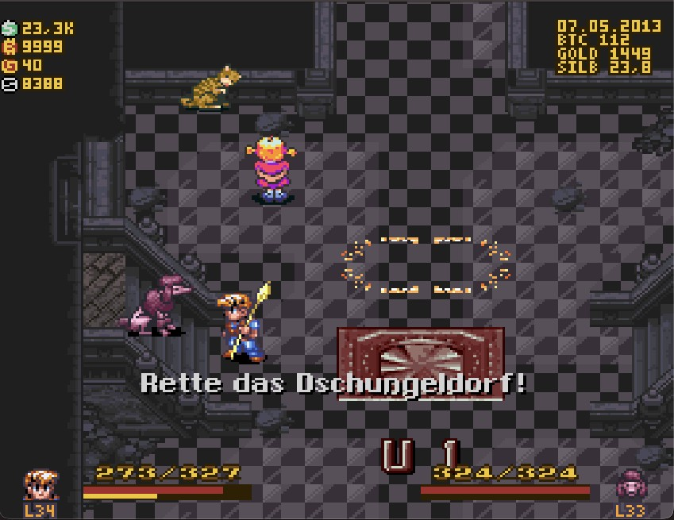

Neue Story
Spiele mit Feuerauge und ihrer Tochter
Spiele mit Feuerauge und ihrer Tochter und erkunde die Tiefen der mysteriösen Souls Cave. Kämpfe dich durch bis ins 99. Untergeschoss – dort wartet ein uraltes Raumschiff mit einer neuen Story auf euch.